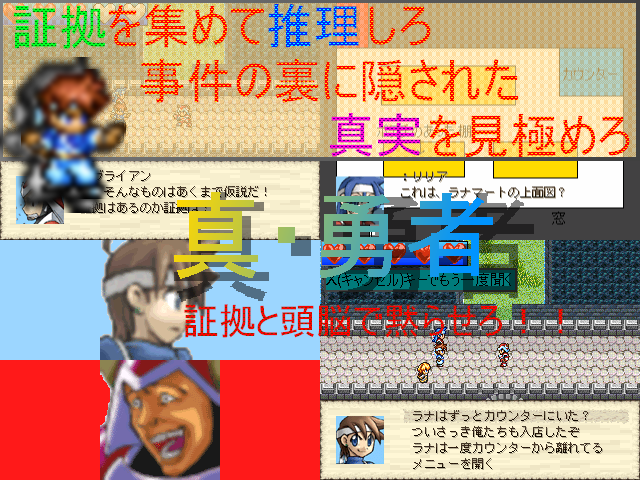

| No.46 | 真・勇者 | 容量：6.25MB | ||
|
 | ||||
| 作者：ムサシ | ジャンル：推理アドベンチャー 使用ツール：2000 | 配信：可 動画：可 | 感想掲示板 | |
| コメント： 初めての祭り参加となります ジャンルは推理アドベンチャー(のつもり)です。主人公はアレックスですが剣を持って素手で魔王を倒すゲームではありません 情報を集め対決、相手を論破し、事件の真相に迫るのがこのゲームの目的です。ただし論破する相手は必ずしも事件の犯人とは限りません 対決では相手に対する反論は選択肢から選ぶ形式と、発言に直接反論する形式があります。時には証拠を直接つきつける場面もあります セーブはメニューからいつでもでき、シナリオが摘む心配はないため必然的に難易度は低めになります ゲームクリアまでの長さは中編クラスです。およそ５時間～８時間、もっと早くクリアできるかもしれません 犯人役に抜擢されたキャラのファン は不快な想いになるかもしれません。ご注意ください | ||||
|
管理者からのコメント： ヤス「犯人は一体っ…！」 | ||||
|
最近の更新： 8/15：提出。 8/4：公開。 | ||||